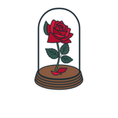

voltar
Saiba que as palavras que escrevi não foram genéricas ou da boca pra fora, elas carregam uma visão que eu tenho de você e, mesmo que você mude, vou guardar essa visão num cantinho especial.
Enfim… você faz diferença na minha vida (e de muitas pessoas) de um jeito que é difícil de explicar com palavras, mas tentei 😅. Só queria que soubesse que eu valorizo muito você e todos os momentos legais que a gente troca.

01010100 01100101 00100000
01100001 01101101 01101111
00100000 01101101 01110101
01101001 01110100
01101111
♥.